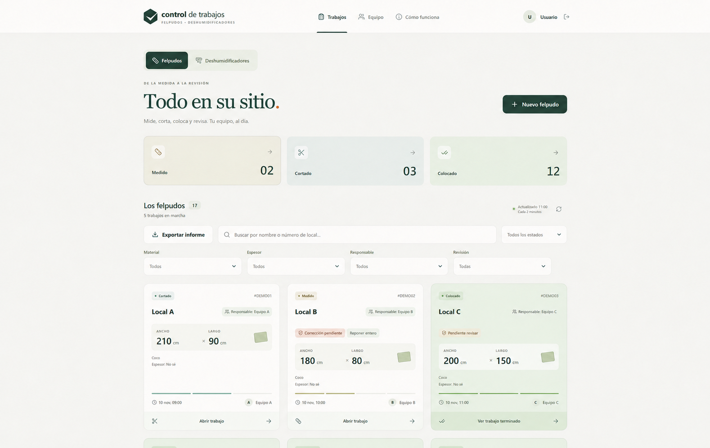

The need
A specific delivery needs materials, people and timing to fit together.
Project coordination
We coordinate specific assignments within a project: what is needed, who is involved and how the timing fits. A defined scope that takes the work through to delivery.
A specific delivery needs materials, people and timing to fit together.
We prepare the sequence, coordinate resources and track the agreed assignment.
Experience coordinating material installation within tight delivery windows.
Scope, resources and date
Sequence and responsibilities
Follow-up through delivery
Applications we have built
Applications developed to track queries, coordinate work and prepare management documents. Sample views adapted to protect each project’s information.

A tool for recording assignments and checking their status. Tracking fits the team’s sequence of work.
We start by listening
In 15 minutes, we identify one task and the outcome you want. No presentation or full company walkthrough needed.
Let’s explore your project